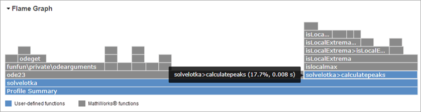
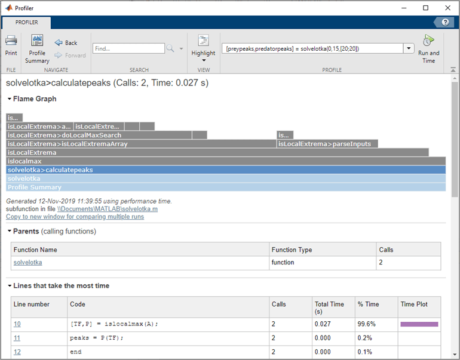

Profile Your Code to Improve Performance
What Is Profiling?
Profiling is a way to measure the time it takes to run your code and identify where MATLAB® spends the most time. After you identify which functions are consuming the most time, you can evaluate them for possible performance improvements. You also can profile your code to determine which lines of code do not run. Determining which lines of code do not run is useful when developing tests for your code, or as a debugging tool to help isolate a problem in your code.
You can profile your code interactively using the MATLAB Profiler or programmatically using the profile
function. For more information about profiling your code programmatically, see
profile. If you are profiling code
that runs in parallel, for best results use the Parallel Computing Toolbox™ parallel profiler. For details, see Profiling Parallel Code (Parallel Computing Toolbox).
Tip
Code that is prematurely optimized can be unnecessarily complex without providing a significant gain in performance. Make your first implementation as simple as possible. Then, if speed is an issue, use profiling to identify bottlenecks.
Profile Your Code
To profile your code and improve its performance, use this general process:
Run the Profiler on your code.
Review the profile summary results.
Investigate functions and individual lines of code.
For example, you may want to investigate functions and lines of code that use a significant amount of time or that are called most frequently.
Save the profiling results.
Implement potential performance improvements in your code.
For example, if you have a
loadstatement within a loop, you might be able to move theloadstatement outside the loop so that it is called only once.Save the files, and run
clear all. Run the Profiler again and compare the results to the original results.Repeat the above steps to continue improving the performance of your code. When your code spends most of its time on calls to a few built-in functions, you have probably optimized the code as much as possible.
Run the Profiler on Your Code
To run the Profiler on a line of code:
Open the Profiler by going to the Apps tab, and under MATLAB, clicking the Profiler app icon. You also can type
profile viewerin the Command Window.Go to the Profiler tab, and in the Profile section, enter the code that you want to profile in the edit box.
For example, create a function
solvelotka.mthat finds the prey and predator population peaks for the Lotka-Volterra example provided with MATLAB:Enter this statement in the edit box to profile thefunction [preypeaks,predatorpeaks] = solvelotka(t0, tfinal, y0) [~,y] = ode23(@lotka,[t0 tfinal],y0); preypeaks = calculatepeaks(y(:,1)); predatorpeaks = calculatepeaks(y(:,2)); end function peaks = calculatepeaks(A) [TF,P] = islocalmax(A); peaks = P(TF); endsolvelotkafunction:[preypeaks,predatorpeaks] = solvelotka(0,15,[20;20])
If you previously profiled the statement in the current MATLAB session, you also can select it from the edit box drop down list.
Click Run and Time.
When profiling is complete, the Profiler displays the results in Profile Summary. The statements you profiled also display as having been run in the Command Window.
To profile a code file open in the Editor, on the Editor tab, in the Run section, select Run > Run and Time. The Profiler profiles the code file open in the current Editor tab and displays the results in the Profile Summary.
Review the Profile Summary Results
After running the Profiler on your code, the Profile Summary presents
statistics about the overall execution of your code and provides summary
statistics for each function called. For example, the image below shows the
Profile Summary for the solvelotka function.

At the top of the Profile Summary results, a flame graph shows a visual representation of the time MATLAB spent running the code. Each function that was run is represented by a bar in the flame graph. User-defined functions display in blue, and MathWorks® functions display in gray.
The functions in the graph display in hierarchical order, with parent functions appearing lower on the graph, and child functions appearing higher on the graph. The bar that spans the entire bottom of the graph labeled Profile Summary represents all of the code that ran. The width of a bar on the graph represents the amount of time it took for the function to run as a percentage of the total run time.
To see the actual percentage and time values as well as the full function name, hover over the bar in the graph. To display detailed information about a function including information about individual code lines, click the bar representing that function.

The function table below the flame frame displays similar information to the flame graph. Initially the functions appear in order of time they took to process. This table describes the information in each column.
| Column | Description |
|---|---|
| Function Name | Name of the function called by the profiled code. |
| Calls | Number of times the profiled code called the function. |
| Total Time | Total time spent in the function, in seconds. The time for the function includes time spent in child functions. The Profiler itself takes some time, which is included in the results. The total time can be zero for files whose run time is inconsequential. |
| Self Time | Total time in seconds spent in a function, excluding time spent in any child functions. Self time also includes some overhead resulting from the process of profiling. |
| Total Time Plot | Graphic display showing self time compared to total time. |
To sort the function table by a specific column, click the arrow in the column header. For example, click the arrow in the Function Name column to sort the functions alphabetically. Initially the results appear in order by Total Time. To display detailed information about a function including information about individual code lines, click the function name.
Investigate Functions and Individual Code Lines
To find potential improvements in your code, look for functions in the flame
graph or function table that use a significant amount of time or that are called
most frequently. Click a function name to display detailed information about the
function, including information about individual code lines. For example, click
the solvelotka>calculatepeaks function. The Profiler displays
detailed information for the function.

At the top of the page, next to the name of the current function, the Profiler displays the number of times the function was called by a parent function and the total time spent in the function. Use the displayed links underneath the flame graph to open the function in your default editor or copy the displayed results to a separate window.
To return to the Profile Summary, in the Profiler tab, click the Profile Summary button. You also can click the Profile Summary bar at the bottom of the flame graph.
Once you have clicked an individual function, the Profiler displays additional information in these sections:
| Section | Details |
|---|---|
| Flame Graph | Flame graph showing visual representation of the time MATLAB spent running the profiled function. The graph shows the hierarchy of the profiled function, including child functions (displayed above the current function) and parent functions (displayed below the current function). User-defined functions display in blue (), and MathWorks functions display in gray (). Hover over the bar in the graph to see the actual percentage and time values as well as the full function name. Click a bar representing a function to display detailed information about the function. |
| Parents | List of functions that call the profiled function, including the number of times the parent function called the profiled function. Click a function name in the list to display detailed information about the function. |
| Lines that take the most time | List of code lines in the profiled function that used the greatest amount of processing time. Click a code line to see it in the Function Listing section, within the context of the rest of the function code. |
| Children | List of all the functions called by the profiled function. Click a function name in the list to display detailed information about the function. |
| Code Analyzer results | List of problems and potential improvements for the profiled function. |
| Coverage results | Code coverage statistics about the lines of code in the function that MATLAB executed while profiling. To perform additional code coverage analysis for your code, see Collect Statement and Function Coverage Metrics for MATLAB Source Code. |
| Function listing | Source code for the function, if it is a MATLAB code file. For each line of code, the Function listing includes these columns:
By default, the Profiler highlights lines
of code with the longest execution time. The darker the
highlighting, the longer the line of code took to execute.
To change the highlighting criteria, go to the
Profiler tab, and in the
View section, click
Highlight
|
Save Your Results
To compare the impact of changes after you have made improvements to your code, save your profiling results. To save your results, use the displayed link underneath the flame graph to copy the displayed results to a separate window.

You also can print your results from the Profiler by going to the Profiler tab and clicking the Print button.
Profile Multiple Statements in Command Window
To profile more than one statement in the Command Window:
Go to the Command Window and type
profile on.Enter and run the statements that you want to profile.
After running all of the statements, type
profile off.Open the Profiler by typing
profile viewer. You also can go to the Apps tab, and under MATLAB, click the Profiler app icon.Review the Profile Summary results.
Profile an App
You can profile apps that you create in App Designer. You also can profile apps that ship with MathWorks products, such as the Filter Design and Analysis tool included with Signal Processing Toolbox™.
To profile an app:
Open the Profiler by going to the Apps tab, and under MATLAB, clicking the Profiler app icon. You also can type
profile viewerin the Command Window.In the Profile section of the Profiler toolstrip, click Start Profiling. Make sure that there is no code in the edit box to the right of the button.
Start the app.
Use the app.
When you are finished, click Stop Profiling in the Profiler toolstrip.
Review the Profile Summary results.
Note
To exclude the app startup process in the profile, reverse steps 2 and 3. In other words, start the app before you click Start Profiling.